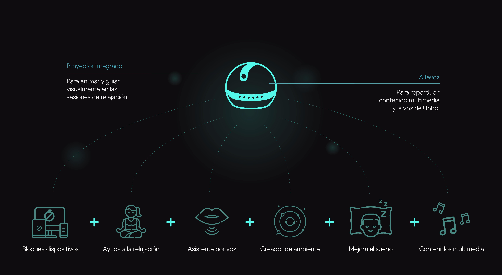
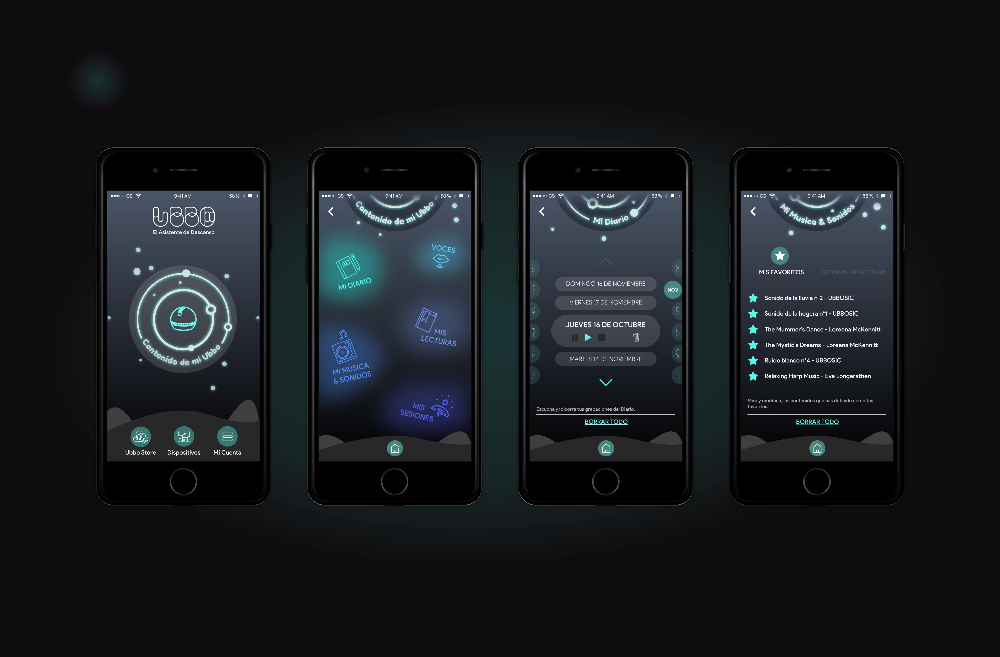

●
Diseño de un asistente de descanso y desconexión digital mediante VUI
Estamos en la era digital, y vivimos rodeados por pantallas. El entretenimiento al alcance de la mano resulta, que no aporta solo beneficios, sino que se esta volviendo uno de los problemas más habituales de nuestra sociedad, por lo que el tema que elegí para realizar mi proyecto fue:
¿Cómo poder ayudar a los usuarios
a desconectar de las pantallas?
Mediante la metodología del Design Thinking, llevé a cabo la investigación mediante las técnicas del UX Research, con el objetivo de intentar encontrar una solución al hecho de que, el abuso de uso de dispositivos electrónicos conectados esta trastornando nuestros aspectos mas humanos.
Investigación completa, desarollo y test con usuarios de la idea aquí, en Medium.
●

●
Una de las cosas que más resurgía durante la investigación es que, esta super-conectividad esta alterado nuestra rutina perturbando considerablemente nuestra calidad de descanso, cuando éste, es uno de los pilares, tanto mental como físico, de la salud.
Perdemos horas de sueño, y estas son de peor calidad. Repercute directamente en nuestro día a día creando más frustración y problemas de salud que pueden parecer insignificantes, pero están ahí. Tras realizar ejercicios de empatía mediante las técnicas del User Centred Design, en situaciones en las que usamos dispositivos conectados,
además de cuestionarios online mas profundos enfocados hacia este tema, vi mi espacio de oportunidad: ¡gran parte de los usuarios quieren desconectar porque son conscientes de este uso excesivo, pero sólos, no lo consiguen! Entonces, decidí que mi objetivo seria el de ayudar a los usuarios a descansar, desconectando de las pantallas.
Y tras investigar más profundamente los productos existentes que buscan responder a esta problemática, mediante técnicas como el Benchmark y la Netnografía, y clasificar ideas con el fin de crear una propuesta de valor innovadora, llegue a la solución a la que llame: Ubbo, el asistente de descanso.
●
●
●
Ubbo, este es un objeto tecnológico, dotado de una interfaz de voz con la cuál el usuario interactúa,
viene con su mini proyector y un altavoz de calidad integrados y estas son sus funcionalidades principales:
●
Un diario
El usuario lo dicta por voz, directamente a Ubbo que lo graba y lo guarda. El usuario podrá volver a escucharlo o borrarlo.
Esta opción se incluye porque uno de los problemas mas detectados durante la investigación es que por culpa de la digitalización, se esta
perdiendo la capacidad de expresar y entender nuestras propias emociones. Contándolo en voz alta, el usuario practica el ejercicio
de expresión y puede llegar a mejorar la comprensión de si mismo, su confianza y sus relaciones sociales.
Un repertorio de Música relajante y sonidos
Ruido Blanco, Ondas Alpha, sonido de la lluvia, de pájaros
y muchos más reconocidos como sonoridades relajantes.
Un repertorio de Audio Libros
Al ser por audio, el usuario puede descansar la vista y el cuerpo:
se quedara dormido rápidamente.
Un repertorio de “Sesiones”
Comporta videos de yoga para proyectar, audios de meditación guiada, videos de naturaleza,
audios de hipnosis contra el insomnio...
Un repertorio de Voces
Estas, se le pueden dar a la interfaz de voz de Ubbo. Según el perfil del usuario, podrá gustarle
una voz femenina o masculina, mas joven o como la de “la abuela“.
Un repertorio de Consejos
Noticias sobre como mejorar la calidad de vida del usuario.

●
Ubbo puede, desde poner simplemente música relajante, hasta proyectar un vídeo de un paseo entre nebulosas, acompañado de una sesión de meditación guiada para alcanzar el sueño profundo. Todas las funciones están dirigidas hacia la mejora del descanso del usuario y la mejora del autocontrol del uso de los dispositivos electrónicos o conectados (teléfono móvil, televisión, ordenador...), durante los momentos dedicados al descanso.
●
●
Para el aspecto visual y interactivo de la App, quise reflejar un estilo cósmico, con movimientos muy circulares y suaves para que la app inspire calma y ligereza. Evitando cualquier forma puntiaguda, creamos un ambiente simpático y tranquilo.
Ubbo apunta a las emociones y otros elementos abstractos que a veces es difícil de expresar. Por eso, me puedo permitir integrar formas orgánicas interactivas que se diferencien de por ejemplo un calendario o un menú común de configuraciones.
●
●
